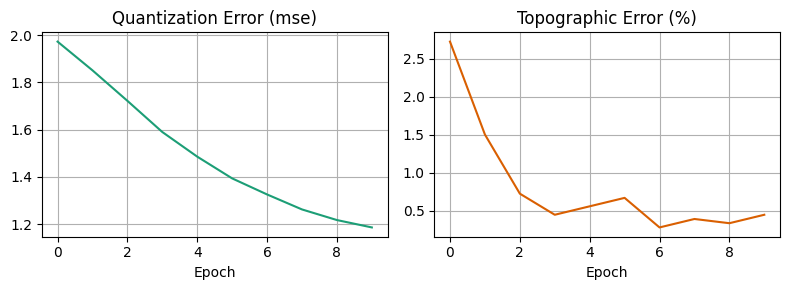
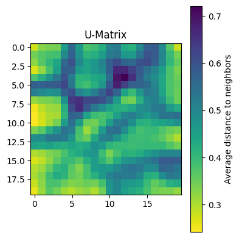

Exported source
dist_fn = lambda x, ws: np.linalg.norm(ws-x, axis=-1)SOM (grid_sz:tuple, input_dim:int, init:str='random', dist_fn=<function <lambda>>)
Initialize a Self-Organizing Map with given grid size and input dimension
| Type | Default | Details | |
|---|---|---|---|
| grid_sz | tuple | grid size | |
| input_dim | int | input dimension | |
| init | str | random | initialization method |
| dist_fn | function | distance function | |
| Returns | None | initialize the SOM |
class SOM:
def __init__(self,
grid_sz:tuple, # grid size
input_dim:int, # input dimension
init:str='random', # initialization method
# dist_fn=np.linalg.norm # distance function
dist_fn=dist_fn # distance function
)->None: # initialize the SOM
"Initialize a Self-Organizing Map with given grid size and input dimension"
store_attr()
self.weights = None # Will be initialized when fittingexp_sched (start_val, end_val, i, n_steps)
@patch
def _initialize_weights_pca(self:SOM, X:np.ndarray)->np.ndarray:
"Initialize weights using PCA of the input data"
pca = PCA(n_components=2)
pca.fit(X)
# Create grid coordinates and scale by eigenvalues
n = self.grid_sz[0]
alpha = np.linspace(-1, 1, n) * np.sqrt(pca.explained_variance_[0])
beta = np.linspace(-1, 1, n) * np.sqrt(pca.explained_variance_[1])
# Create the grid
alpha_grid, beta_grid = np.meshgrid(alpha, beta)
# Initialize weights as linear combination of first two PCs
return (alpha_grid[..., np.newaxis] * pca.components_[0] +
beta_grid[..., np.newaxis] * pca.components_[1])@patch
def _initialize_weights(self:SOM,
X:np.ndarray=None, # data matrix
method:str='random' # initialization method
)->np.ndarray: # weights matrix
"Initialize weights using either random or PCA initialization"
if method == 'random':
return np.random.randn(*self.grid_sz, self.input_dim)
elif method == 'pca':
if X is None:
raise ValueError("Data matrix X required for PCA initialization")
return self._initialize_weights_pca(X)@patch
def _update_weights(self:SOM,
x:np.ndarray, # input vector
learning_rate:float, # learning rate
sigma:float # neighborhood radius
)->None: # update weights
"Update weights for a single input vector"
bmu_pos = self._find_bmu(x)
grid_dist = self._grid_distances(bmu_pos)
neighborhood = self._neighborhood_function(grid_dist, sigma)
self.weights += learning_rate * neighborhood[..., np.newaxis] * (x - self.weights)Scheduler (start_val, end_val, step_size, n_samples, n_epochs, decay_fn=<function exp_sched>)
Initialize self. See help(type(self)) for accurate signature.
class Scheduler:
def __init__(self, start_val, end_val, step_size,
n_samples, n_epochs, decay_fn=exp_sched):
store_attr()
self.current_step = 0
self.current_value = start_val
self.total_steps = (n_samples * n_epochs) // step_size
def step(self, total_samples):
if total_samples % self.step_size == 0:
self.current_value = self.decay_fn(
self.start_val, self.end_val,
self.current_step, self.total_steps
)
self.current_step += 1
return self.current_valueformat_metrics_html (epochs_data:list)
| Type | Details | |
|---|---|---|
| epochs_data | list | list of tuples: [(epoch, qe, te), …] |
def format_metrics_html(
epochs_data:list, # list of tuples: [(epoch, qe, te), ...]
):
# Format the metrics as an HTML table
# epochs_data should be a list of tuples: [(epoch, qe, te), ...]
rows = ''.join([
f"""
<tr>
<td style="padding: 3px">{epoch+1:3d}</td>
<td style="padding: 3px">{qe:8.4f}</td>
<td style="padding: 3px">{te:8.4f}</td>
</tr>
""" for epoch, qe, te in epochs_data
])
return f"""
<div style="font-family: monospace; margin: 10px">
<h4>Training Progress</h4>
<table style="border-collapse: collapse">
<tr style="border-bottom: 2px solid #ddd">
<th style="font-weight: bold; padding: 5px; text-align: left">Epoch</th>
<th style="font-weight: bold; padding: 5px; text-align: right">QE</th>
<th style="font-weight: bold; padding: 5px; text-align: right">TE</th>
</tr>
{rows}
</table>
</div>
"""setup_error_plots (**kwargs)
Setup error plots
def setup_error_plots(**kwargs):
"Setup error plots"
kwargs.get('figsize')
fig, (ax1, ax2) = plt.subplots(1, 2, figsize=kwargs.get('figsize', (8, 3)), dpi=kwargs.get('dpi', 100))
ax1.set_title('Quantization Error')
ax2.set_title('Topographic Error')
ax1.set_xlabel('Epoch')
ax2.set_xlabel('Epoch')
ax1.grid(True)
ax2.grid(True)
plt.tight_layout()
return fig, ax1, ax2update_error_plots (fig:matplotlib.figure.Figure, ax1:matplotlib.axes._axes.Axes, ax2:matplotlib.axes._axes.Axes, epochs:list, qe_errors:list, te_errors:list, display_handle:<function display>)
Update error plots
| Type | Details | |
|---|---|---|
| fig | Figure | figure |
| ax1 | Axes | quantization error plot |
| ax2 | Axes | topographic error plot |
| epochs | list | epochs |
| qe_errors | list | quantization errors |
| te_errors | list | topographic errors |
| display_handle | display | display handle |
def update_error_plots(
fig:plt.Figure, # figure
ax1:plt.Axes, # quantization error plot
ax2:plt.Axes, # topographic error plot
epochs:list, # epochs
qe_errors:list, # quantization errors
te_errors:list, # topographic errors
display_handle:display # display handle
):
"Update error plots"
colors = ['#1c9e76', '#d95f01']
ax1.clear()
ax2.clear()
ax1.plot(epochs, qe_errors, colors[0])
ax2.plot(epochs, te_errors, colors[1])
ax1.set_title('Quantization Error (mse)', fontsize=12)
ax2.set_title('Topographic Error (%)', fontsize=12)
ax1.set_xlabel('Epoch', fontsize=10)
ax2.set_xlabel('Epoch', fontsize=10)
ax1.grid(True)
ax2.grid(True)
plt.tight_layout()
display_handle.update(fig)SOM.fit (X:numpy.ndarray, n_epochs:int=20, lr_scheduler:__main__.Scheduler=None, sigma_scheduler:__main__.Scheduler=None, shuffle:bool=True, verbose:bool=True, **kwargs)
Train the SOM on input data X
| Type | Default | Details | |
|---|---|---|---|
| X | ndarray | data matrix | |
| n_epochs | int | 20 | number of epochs |
| lr_scheduler | Scheduler | None | learning rate scheduler |
| sigma_scheduler | Scheduler | None | neighborhood radius scheduler |
| shuffle | bool | True | shuffle data |
| verbose | bool | True | verbose |
| kwargs | |||
| Returns | tuple | tuple of weights, quantization errors, and topographic errors |
@patch
def fit(self:SOM,
X:np.ndarray, # data matrix
n_epochs:int=20, # number of epochs
lr_scheduler:Scheduler=None, # learning rate scheduler
sigma_scheduler:Scheduler=None, # neighborhood radius scheduler
shuffle:bool=True, # shuffle data
verbose:bool=True, # verbose
**kwargs # additional arguments
)->tuple: # tuple of weights, quantization errors, and topographic errors
"Train the SOM on input data X"
if self.weights is None:
self.weights = self._initialize_weights(X, self.init)
if lr_scheduler is None:
lr_scheduler = Scheduler(1.0, 0.01, 100, len(X), n_epochs)
if sigma_scheduler is None:
sigma_scheduler = Scheduler(max(self.grid_sz)/2, 1.0, 100, len(X), n_epochs)
qe_errors, te_errors = [], []
epochs_data = []
mb = master_bar(range(n_epochs))
# Setup displays
if verbose:
display_metrics = display(HTML(''), display_id='metrics')
fig, ax1, ax2 = setup_error_plots(**kwargs)
display_plots = display(fig, display_id='plots')
for epoch in mb:
X_ = np.random.permutation(X) if shuffle else X.copy()
for i, x in progress_bar(enumerate(X_), total=len(X_), parent=mb):
total_samples = epoch * len(X) + i
lr = lr_scheduler.step(total_samples)
sigma = sigma_scheduler.step(total_samples)
self._update_weights(x, lr, sigma)
qe = self.quantization_error(X)
te = self.topographic_error(X)
qe_errors.append(qe)
te_errors.append(te)
if verbose:
epochs_data.append((epoch, qe, te))
display_metrics.update(HTML(format_metrics_html(epochs_data)))
update_error_plots(fig, ax1, ax2,
list(range(epoch + 1)),
qe_errors, te_errors,
display_plots)
if verbose: plt.close(fig) # Close the figure at the end
return self.weights, qe_errors, te_errorsSOM.quantization_error (X:numpy.ndarray)
Calculate average distance between each input vector and its BMU
| Type | Details | |
|---|---|---|
| X | ndarray | data matrix |
| Returns | float | quantization error |
SOM.topographic_error (X:numpy.ndarray)
Calculate proportion of data vectors where 1st and 2nd BMUs are not adjacent
| Type | Details | |
|---|---|---|
| X | ndarray | data matrix |
| Returns | float | topographic error |
@patch
def topographic_error(self:SOM,
X:np.ndarray # data matrix
)->float: # topographic error
"Calculate proportion of data vectors where 1st and 2nd BMUs are not adjacent"
def _check_bmu_adjacency(x):
# Get indices of two best matching units
distances = self.dist_fn(x, self.weights)
flat_indices = np.argpartition(distances.flatten(), 2)[:2]
indices = np.unravel_index(flat_indices, self.grid_sz)
# Check if any coordinate differs by more than 1
return any(np.abs(x-y) > 1 for x,y in indices)
n_errors = sum(_check_bmu_adjacency(x) for x in X)
return (100 * n_errors) / len(X) # Return percentageSOM.transform (X:numpy.ndarray)
Find Best Matching Unit (BMU) coordinates for each input vector
| Type | Details | |
|---|---|---|
| X | ndarray | data matrix |
| Returns | ndarray | bmu coordinates |
SOM.predict (X:numpy.ndarray)
Alias for transform method to follow sklearn convention
| Type | Details | |
|---|---|---|
| X | ndarray | data matrix |
| Returns | ndarray | bmu coordinates |
SOM.umatrix ()
Return the U-Matrix for current weights
@patch
def _calculate_umatrix(self:SOM)->np.ndarray:
"Calculate U-Matrix values for current weights"
def _neighbor_distances(pos):
# Offsets for 8 neighbors
nbr_offsets = [
(-1,-1), (-1,0), (-1,1), # top-left, top, top-right
(0,-1), (0,1), # left, right
(1,-1), (1,0), (1,1) # bottom-left, bottom, bottom-right
]
distances = []
weights = []
for dr, dc in nbr_offsets:
r, c = pos
nbr_r, nbr_c = r+dr, c+dc
if (nbr_r >= 0 and nbr_r < self.grid_sz[0] and
nbr_c >= 0 and nbr_c < self.grid_sz[1]):
w = 1/np.sqrt(dr**2 + dc**2) # weight by distance
weights.append(w)
d = self.dist_fn(self.weights[r,c], self.weights[nbr_r,nbr_c])
distances.append(d)
return np.average(distances, weights=weights)
umatrix = np.zeros(self.grid_sz)
for i, j in np.ndindex(self.grid_sz):
umatrix[i,j] = _neighbor_distances((i,j))
return umatrixSOM.plot_umatrix (figsize=(8, 6), cmap='viridis_r')
Plot U-Matrix visualization
# Load and normalize MNIST data
from sklearn.datasets import load_digits
X, y = load_digits(return_X_y=True)
X_norm = (X - np.mean(X, axis=-1, keepdims=True))/X.max()
# Create and train SOM
som = SOM(grid_sz=(20,20), input_dim=64, init='pca')
_ = som.fit(X_norm, n_epochs=10, verbose=True)
som.plot_umatrix(figsize=(4,4))| Epoch | QE | TE |
| 1 | 1.9729 | 2.7268 |
| 2 | 1.8512 | 1.5025 |
| 3 | 1.7220 | 0.7234 |
| 4 | 1.5898 | 0.4452 |
| 5 | 1.4855 | 0.5565 |
| 6 | 1.3933 | 0.6678 |
| 7 | 1.3253 | 0.2782 |
| 8 | 1.2618 | 0.3895 |
| 9 | 1.2168 | 0.3339 |
| 10 | 1.1855 | 0.4452 |

